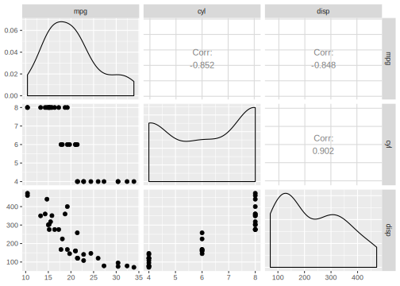
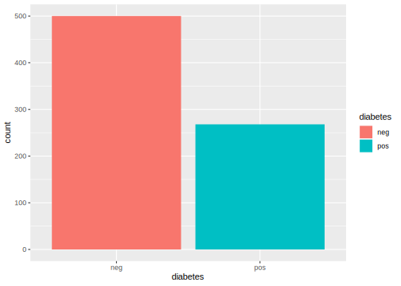
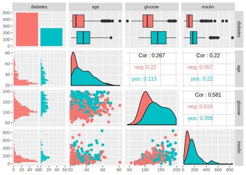
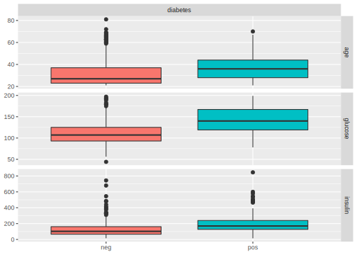
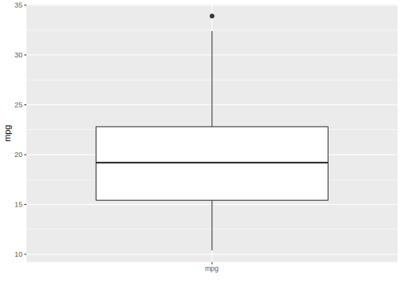
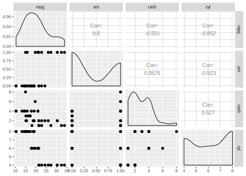

2.2 Tasks
Tasks are objects for the data and additional meta-data for a machine learning problem. The meta-data is for example the name of the target variable (the prediction) for supervised machine learning problems, or the type of the dataset (e.g. a spatial or survival). This information is used for specific operations that can be performed on a task.
2.2.1 Task Types
To create a task from a data.frame() or data.table() object, the task type needs to be specified:
Classification Task: The target is a label (stored as character()orfactor()) with only few distinct values.
→ mlr3::TaskClassif
Regression Task: The target is a numeric quantity (stored as integer() or double()).
→ mlr3::TaskRegr
Survival Task: The target is the (right-censored) time to an event.
→ mlr3proba::TaskSurv in add-on package mlr3proba
Ordinal Regression Task: The target is ordinal.
→ mlr3ordinal::TaskOrdinal in add-on package mlr3ordinal
Cluster Task: An unsupervised task type; there is no target and the aim is to identify similar groups within the feature space.
→ Not yet implemented
Spatial Task: Observations in the task have spatio-temporal information (e.g. coordinates).
→ Not yet implemented, but started in add-on package mlr3spatiotemporal
2.2.2 Task Creation
As an example, we will create a regression task using the mtcars data set from the package datasets and predict the target "mpg" (miles per gallon).
We only consider the first two features in the dataset for brevity.
First, we load and prepare the data.
data("mtcars", package = "datasets")
data = mtcars[, 1:3]
str(data)
## 'data.frame': 32 obs. of 3 variables:
## $ mpg : num 21 21 22.8 21.4 18.7 18.1 14.3 24.4 22.8 19.2 ...
## $ cyl : num 6 6 4 6 8 6 8 4 4 6 ...
## $ disp: num 160 160 108 258 360 ...Next, we create the task using the constructor for a regression task object (TaskRegr$new) and give the following information:
-
id: An arbitrary identifier for the task, used in plots and summaries. -
backend: This parameter allows fine-grained control over how data is accessed. Here, we simply provide the dataset which is automatically converted to aDataBackendDataTable. We could also construct aDataBackendmanually. -
target: The name of the target column for the regression problem.
library(mlr3)
task_mtcars = TaskRegr$new(id = "cars", backend = data, target = "mpg")
print(task_mtcars)
## <TaskRegr:cars> (32 x 3)
## * Target: mpg
## * Properties: -
## * Features (2):
## - dbl (2): cyl, dispThe print() method gives a short summary of the task:
It has 32 observations and 3 columns, of which 2 are features.
We can also plot the task using the mlr3viz package, which gives a graphical summary of its properties:
library(mlr3viz)
autoplot(task_mtcars, type = "pairs")
## Registered S3 method overwritten by 'GGally':
## method from
## +.gg ggplot2
2.2.3 Predefined tasks
mlr3 ships with a few predefined machine learning tasks.
All tasks are stored in an R6 Dictionary (a key-value store) named mlr_tasks.
Printing it gives the keys (the names of the datasets):
mlr_tasks
## <DictionaryTask> with 9 stored values
## Keys: boston_housing, german_credit, iris, mtcars, pima, sonar, spam,
## wine, zooWe can get a more informative summary of the example tasks by converting the dictionary to a data.table() object:
library(data.table)
as.data.table(mlr_tasks)
## key task_type nrow ncol lgl int dbl chr fct ord pxc
## 1: boston_housing regr 506 19 0 3 13 0 2 0 0
## 2: german_credit classif 1000 21 0 0 7 0 12 1 0
## 3: iris classif 150 5 0 0 4 0 0 0 0
## 4: mtcars regr 32 11 0 0 10 0 0 0 0
## 5: pima classif 768 9 0 0 8 0 0 0 0
## 6: sonar classif 208 61 0 0 60 0 0 0 0
## 7: spam classif 4601 58 0 0 57 0 0 0 0
## 8: wine classif 178 14 0 2 11 0 0 0 0
## 9: zoo classif 101 17 15 1 0 0 0 0 0To get a task from the dictionary, one can use the $get() method from the mlr_tasks class and assign the return value to a new object.
For example, to use the iris data set for classification:
task_iris = mlr_tasks$get("iris")
print(task_iris)
## <TaskClassif:iris> (150 x 5)
## * Target: Species
## * Properties: multiclass
## * Features (4):
## - dbl (4): Petal.Length, Petal.Width, Sepal.Length, Sepal.WidthAlternatively, you can also use the convenience function tsk(), which also constructs a task from the dictionary.
2.2.4 Task API
All task properties and characteristics can be queried using the task’s public fields and methods (see Task).
Methods are also used to change the behavior of the task.
2.2.4.1 Retrieving Data
The data stored in a task can be retrieved directly from fields, for example:
More information can be obtained through methods of the object, for example:
task_iris$data()
## Species Petal.Length Petal.Width Sepal.Length Sepal.Width
## 1: setosa 1.4 0.2 5.1 3.5
## 2: setosa 1.4 0.2 4.9 3.0
## 3: setosa 1.3 0.2 4.7 3.2
## 4: setosa 1.5 0.2 4.6 3.1
## 5: setosa 1.4 0.2 5.0 3.6
## ---
## 146: virginica 5.2 2.3 6.7 3.0
## 147: virginica 5.0 1.9 6.3 2.5
## 148: virginica 5.2 2.0 6.5 3.0
## 149: virginica 5.4 2.3 6.2 3.4
## 150: virginica 5.1 1.8 5.9 3.0In mlr3, each row (observation) has a unique identifier.
The identifier is either an integer or character.
These can be passed as arguments to the $data() method to select specific rows.
The iris task uses integer row_ids:
# iris uses integer row_ids
head(task_iris$row_ids)
## [1] 1 2 3 4 5 6
# retrieve data for rows with ids 1, 51, and 101
task_iris$data(rows = c(1, 51, 101))
## Species Petal.Length Petal.Width Sepal.Length Sepal.Width
## 1: setosa 1.4 0.2 5.1 3.5
## 2: versicolor 4.7 1.4 7.0 3.2
## 3: virginica 6.0 2.5 6.3 3.3The mtcars task on the other hand uses names for its row_ids, encoded as character:
task_mtcars = tsk("mtcars")
head(task_mtcars$row_ids)
## [1] "AMC Javelin" "Cadillac Fleetwood" "Camaro Z28"
## [4] "Chrysler Imperial" "Datsun 710" "Dodge Challenger"
# retrieve data for rows with id "Datsun 710"
task_mtcars$data(rows = "Datsun 710")
## mpg am carb cyl disp drat gear hp qsec vs wt
## 1: 22.8 1 1 4 108 3.85 4 93 18.61 1 2.32Note that the method $data() only allows to read the data and does not modify it.
Similarly, each column has an identifier or name.
These names are stored in the public slots feature_names and target_names.
Here “target” refers to the variable we want to predict and “feature” to the predictors for the task.
task_iris$feature_names
## [1] "Petal.Length" "Petal.Width" "Sepal.Length" "Sepal.Width"
task_iris$target_names
## [1] "Species"The row_ids and column names can be combined when selecting a subset of the data:
# retrieve data for rows 1, 51, and 101 and only select column "Species"
task_iris$data(rows = c(1, 51, 101), cols = "Species")
## Species
## 1: setosa
## 2: versicolor
## 3: virginicaTo extract the complete data from the task, one can simply convert it to a data.table:
summary(as.data.table(task_iris))
## Species Petal.Length Petal.Width Sepal.Length Sepal.Width
## setosa :50 Min. :1.00 Min. :0.1 Min. :4.30 Min. :2.00
## versicolor:50 1st Qu.:1.60 1st Qu.:0.3 1st Qu.:5.10 1st Qu.:2.80
## virginica :50 Median :4.35 Median :1.3 Median :5.80 Median :3.00
## Mean :3.76 Mean :1.2 Mean :5.84 Mean :3.06
## 3rd Qu.:5.10 3rd Qu.:1.8 3rd Qu.:6.40 3rd Qu.:3.30
## Max. :6.90 Max. :2.5 Max. :7.90 Max. :4.402.2.4.2 Roles (Rows and Columns)
It is possible to assign roles to rows and columns. These roles affect the behavior of the task for different operations. Furthermore, these roles provide additional meta-data for it.
For example, the previously-constructed mtcars task has the following column roles:
print(task_mtcars$col_roles)
## $feature
## [1] "am" "carb" "cyl" "disp" "drat" "gear" "hp" "qsec" "vs" "wt"
##
## $target
## [1] "mpg"
##
## $name
## character(0)
##
## $order
## character(0)
##
## $stratum
## character(0)
##
## $group
## character(0)
##
## $weight
## character(0)To add the row names of mtcars as an additional feature, we first add them to the data table and then recreate the task.
# with `keep.rownames`, data.table stores the row names in an extra column "rn"
data = as.data.table(mtcars[, 1:3], keep.rownames = TRUE)
task = TaskRegr$new(id = "cars", backend = data, target = "mpg")
# we now have integer row_ids
task$row_ids
## [1] 1 2 3 4 5 6 7 8 9 10 11 12 13 14 15 16 17 18 19 20 21 22 23 24 25
## [26] 26 27 28 29 30 31 32
# there is a new feature called "rn"
task$feature_names
## [1] "cyl" "disp" "rn"The row names are now a feature whose values are stored in the column “rn”. We include this column here for educational purposes only. Generally speaking, there is no point in having a feature that uniquely identifies each row. Furthermore, the character data type will cause problems with many types of machine learning algorithms. The identifier may be useful to label points in plots and identify outliers however. To use the new column for only this purpose, we will change the role of the “rn” column and remove it from the set of active features.
task$feature_names
## [1] "cyl" "disp" "rn"
# working with a list of column vectors
task$col_roles$name = "rn"
task$col_roles$feature = setdiff(task$col_roles$feature, "rn")
# "rn" not listed as feature anymore
task$feature_names
## [1] "cyl" "disp"
# does also not appear when we access the data anymore
task$data(rows = 1:2)
## mpg cyl disp
## 1: 21 6 160
## 2: 21 6 160
task$head(2)
## mpg cyl disp
## 1: 21 6 160
## 2: 21 6 160Changing the role does not change the underlying data. Changing the role only changes the view on it. The data is not copied in the code above. The view is changed in-place though, i.e. the task object itself is modified.
Just like columns, it is also possible to assign different roles to rows. Rows can have two different roles:
Role
useRows that are generally available for model fitting (although they may also be used as test set in resampling). This role is the default role.Role
validationRows that are not used for training. Rows that have missing values in the target column during task creation are automatically set to the validation role.
There are several reasons to hold some observations back or treat them differently:
- It is often good practice to validate the final model on an external validation set to identify possible overfitting.
- Some observations may be unlabeled, e.g. in competitions like Kaggle.
These observations cannot be used for training a model, but can be used to get predictions.
2.2.4.3 Task Mutators
As shown above, modifying $col_roles or $row_roles changes the view on the data.
The additional convenience method $filter() subsets the current view based on row ids and $select() subsets the view based on feature names.
task = tsk("iris")
task$select(c("Sepal.Width", "Sepal.Length")) # keep only these features
task$filter(1:3) # keep only these rows
task$head()
## Species Sepal.Length Sepal.Width
## 1: setosa 5.1 3.5
## 2: setosa 4.9 3.0
## 3: setosa 4.7 3.2While the methods discussed above allow to subset the data, the methods $rbind() and $cbind() allow to add extra rows and columns to a task.
Again, the original data is not changed.
The additional rows or columns are only added to the view of the data.
2.2.5 Plotting Tasks
The mlr3viz provides plotting facilities for many classes implemented in mlr3. The types of plot depend on the inherited class, but all plots are returned as ggplot2 objects which can be easily customized.
For for classification tasks (inheriting from TaskClassif), see the documentation of mlr3viz::autoplot.TaskClassif for the implemented plot types.
Here are some examples to get an impression:
library(mlr3viz)
# get the pima indians task
task = tsk("pima")
# subset task to only use the 3 first features
task$select(head(task$feature_names, 3))
# default plot: class frequencies
autoplot(task)


Of course, you can do the same for regression tasks (inheriting from TaskRegr) as documented in mlr3viz::autoplot.TaskRegr:
library(mlr3viz)
# get the boston housing task
task = tsk("mtcars")
# subset task to only use the 3 first features
task$select(head(task$feature_names, 3))
# default plot: boxplot of target variable
autoplot(task)
